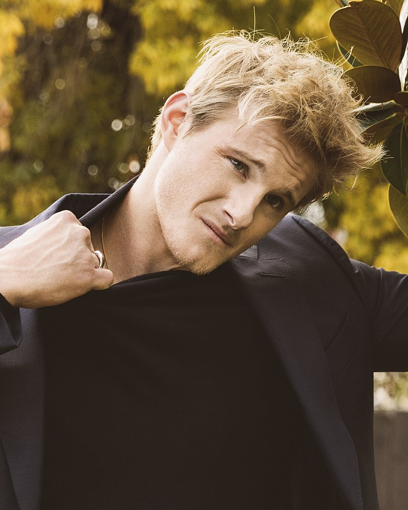

Vikingovia
Travis Fimmel
(born 15 July 1979) is an Australian actor and former model.
He is best known for his role as Ragnar Lothbrok in the History Channel television series Vikings.
Katheryn Winnick
(born December 17, 1977) is a Canadian actress. She is known for her starring roles in the television series Vikings (2013–2020).
Gustaf Skarsgård
.jpg)
(born 12 November 1980) is a Swedish actor with roles in Evil (2003), The Way Back (2010), Kon-Tiki (2012), He also appeared in the HBO TV series Westworld (2018), as Merlin in the Netflix TV series Cursed (2020), and as Floki the boat builder in the History Channel series Vikings (2013–2020).
Clive Standen
(born 22 July 1981) is an English actor best known for playing Bryan Mills in the NBC series Taken, based on the film trilogy of the same name, as well as Rollo in the History Channel series Vikings.
Alexander Ludwig
(born May 7, 1992) is a Canadian actor and singer. He first began his career as a child, and then received recognition as a teenager for starring in the films The Seeker: The Dark Is Rising (2007) and Race to Witch Mountain (2009). He shot to fame for starring as Cato in The Hunger Games (2012).